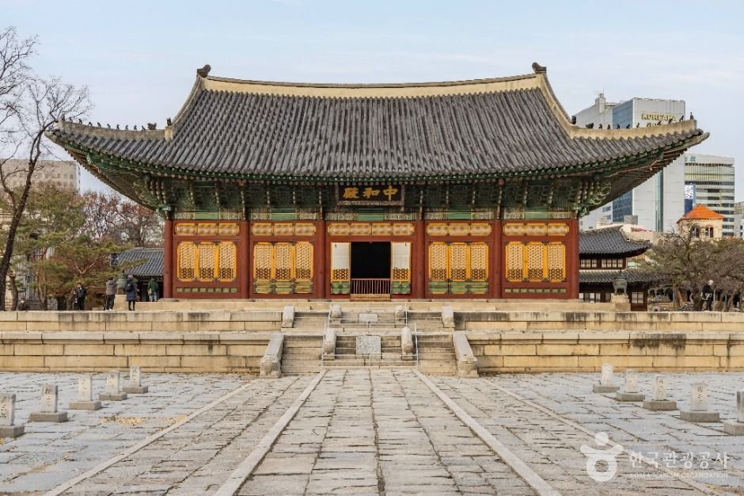
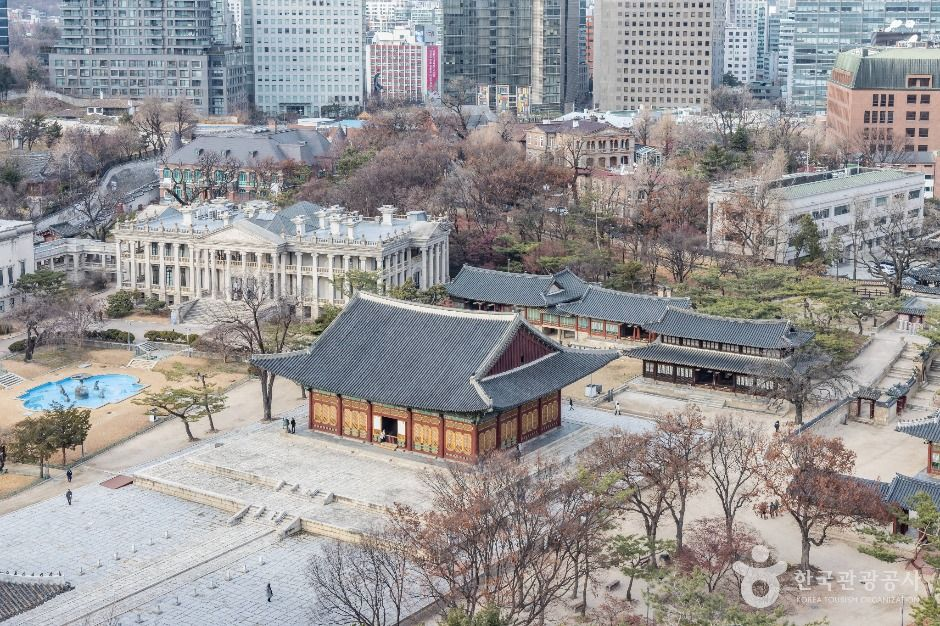
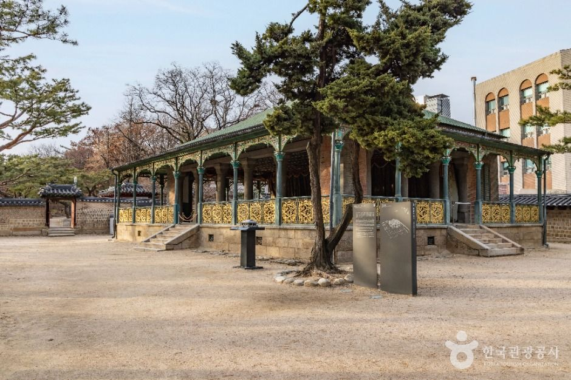
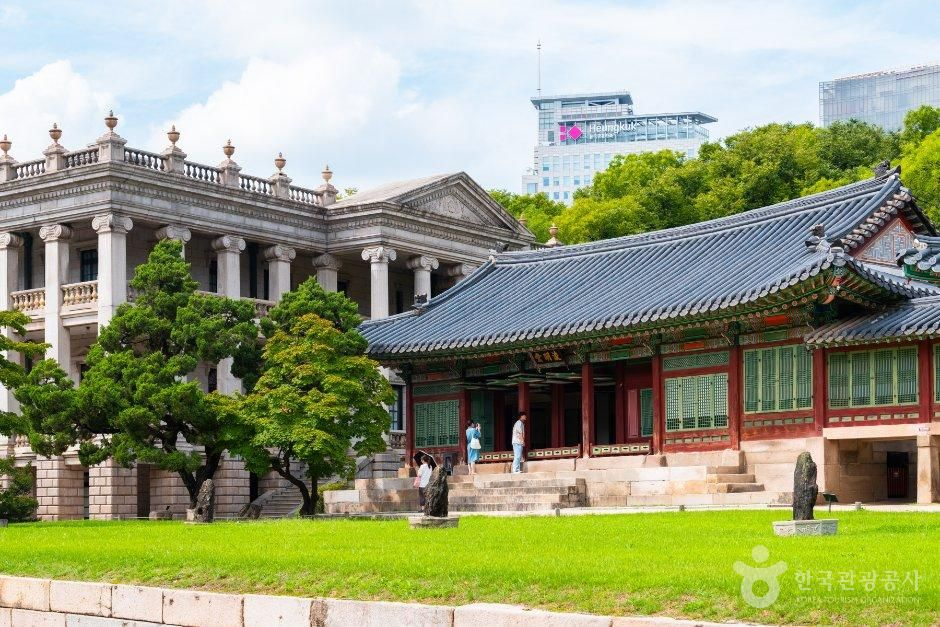
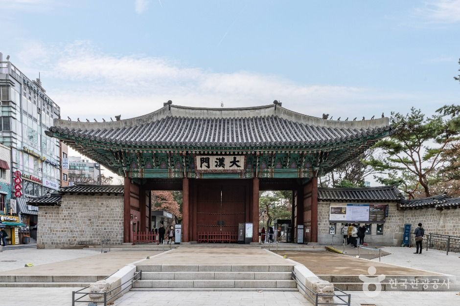

Deoksugung Palace Seoul Guide: Overview
This Deoksugung Palace Seoul guide covers the smallest and most surprising of the city's five Joseon palaces. Deoksugung sits in Jung-gu, right across from Seoul City Hall, and is the only palace where traditional wooden halls stand next to Western-style stone buildings. It was the imperial palace of the Korean Empire (Daehan Jeguk), declared by Emperor Gojong in 1897.
It is also the easiest palace to fit into a busy day: open until 21:00, cheap to enter (1,000 KRW for adults) and just steps from the subway, with the royal guard ceremony outside the gate twice a day. This guide covers the history, the main buildings, hours, tickets, how to get there and tips. We checked the details against Korea Tourism Organization (KTO) data and the Korea Heritage Service's Royal Palaces and Tombs Center pages.
"Joseon rooftops, a neoclassical stone palace and the downtown skyline in one frame. Go late afternoon and stay for the evening lights."

A Short History: From Gyeongungung to Deoksugung
According to KTO, the site began as the home of Grand Prince Wolsan, older brother of King Seongjong. When the Japanese invasion of 1592 burned every palace in the capital, King Seonjo used it as a temporary palace from 1593. It was named Gyeongungung in 1611 and became a full palace, then a secondary one after Changdeokgung was rebuilt.
In 1897 Emperor Gojong declared the Korean Empire and made Gyeongungung its imperial palace, enlarging it and adding Western-style buildings. A great fire in 1904 destroyed many halls, and after Japan forced Gojong to abdicate in 1907, the palace was renamed Deoksugung. Much of it was torn down and turned into a park during the colonial period, and in 1946–47 Seokjojeon hosted the US–Soviet Joint Commission. Restoration has continued ever since.

What to See Inside
- Daehanmun Gate: the main gate on Sejong-daero, where the guard ceremony takes place.
- Junghwajeon: the throne hall, rebuilt after the 1904 fire, with a stone courtyard lined with rank markers.
- Seokjojeon: the white neoclassical stone hall completed in 1910, now the Daehan Empire History Museum; its west wing houses the National Museum of Modern and Contemporary Art (MMCA) Deoksugung.
- Jeonggwanheon: a pavilion that mixes Western colonnades with Korean details, where Gojong is said to have enjoyed coffee.
- Hamnyeongjeon and Deokhongjeon: Gojong's living quarters and reception hall; he died at Hamnyeongjeon in 1919.
- Seogeodang: a rare two-storey wooden hall left unpainted, linked to King Seonjo's stay.
- Dondeokjeon: a rebuilt Western-style reception hall that reopened in 2023 with exhibitions on the Korean Empire's diplomacy.


Visitor Information
| Item | Details |
|---|---|
| Location | 99 Sejong-daero, Jung-gu, Seoul (서울특별시 중구 세종대로 99, 정동) |
| Hours | 09:00–21:00; tickets and last entry until 20:00; closed Mondays (opens on public-holiday Mondays and closes the next non-holiday day) |
| Admission | Adults 19–64: 1,000 KRW; foreign visitors 7–18: 500 KRW; free for 6 and under, 65 and over, hanbok wearers and on free-entry Wednesdays |
| Palace pass | Integrated Palace Pass 10,000 KRW (Gyeongbokgung, Changdeokgung with Huwon, Changgyeonggung, Deoksugung and Jongmyo; valid 3 months) |
| Guard ceremony | Outside Daehanmun at 11:00 and 14:00, not on Mondays; free |
| Seokjojeon museum | Guided sessions only for floors 1–2 (online booking 7 days ahead; English sessions on site); exhibition halls 09:30–17:30 |
| Phone | Deoksugung office +82-2-771-9951; Korea Travel Hotline 1330 |
| Subway | City Hall Station (Lines 1 and 2), exit 2, about 1 minute to Daehanmun |
| Parking | None at the palace; use public transport |
Sources: Korea Tourism Organization data for Deoksugung (덕수궁); Korea Heritage Service visitor information and Royal Palaces and Tombs Center notices for Deoksugung. Photos © Korea Tourism Organization (KOGL Type 1, attribution), unmodified. No AI-generated images.
Getting There and Guard Ceremony
Take Subway Line 1 or 2 to City Hall Station and leave by exit 2; Daehanmun Gate is right in front of you. Gwanghwamun and Gyeongbokgung are about a 15-minute walk north, and Sungnyemun Gate and Namdaemun Market are about 10 minutes south, so Deoksugung fits easily into a downtown walking day.
The Royal Guard Changing Ceremony recreates the Joseon gate guards in bright costumes with drums and banners. It starts at 11:00 and 14:00 outside Daehanmun, every day except Monday. Arrive 10–15 minutes early for a spot near the front, and note that rain, heat waves or cold snaps can cancel it.

Tips for Visiting Deoksugung
- Go late: the palace stays open until 21:00, and the halls and Seokjojeon look beautiful when lit up after sunset.
- Book Seokjojeon early: Korean sessions open online seven days ahead and fill fast; for English, sign up at the desk with your passport.
- Wear hanbok for free entry: hanbok rental shops nearby make it easy, and the free entry covers Deoksugung.
- Walk Deoksugung Doldam-gil: the stone-wall road along the palace towards Jeongdong is lined with ginkgo trees that turn gold in autumn.
- Check Monday closures: like most Seoul palaces, Deoksugung closes on Mondays, while Gyeongbokgung closes on Tuesdays.
How It Compares with Other Seoul Palaces
| Deoksugung | Gyeongbokgung | Changdeokgung | |
|---|---|---|---|
| What it is | Korean Empire palace mixing wooden and stone halls | Main Joseon palace, largest of the five | UNESCO-listed palace with the Secret Garden |
| Best for | Evening visits and a quick downtown stop | First-time visitors and the big throne hall | Gardens and architecture in nature |
| Time needed | 1–1.5 hours | 2–3 hours | 2 hours (plus Huwon tour) |
| Adult ticket | 1,000 KRW | 3,000 KRW | 3,000 KRW (Huwon extra) |
| Closed | Mondays | Tuesdays | Mondays |
Who It Suits
- Great for: Travellers short on time who want a palace near City Hall, Myeong-dong or Gwanghwamun.
- Great for: History fans curious about the Korean Empire and its mix of East and West.
- Great for: Night photographers, since it stays open until 21:00.
- Less ideal: Visitors who want a huge palace complex; Gyeongbokgung is much bigger.
- Less ideal: Monday visits, when the palace and the guard ceremony are closed.
Plan Your Seoul Trip
Deoksugung Palace FAQ
Where is Deoksugung Palace?
Deoksugung (덕수궁) is at 99 Sejong-daero, Jung-gu, Seoul, right across from Seoul City Hall and Seoul Plaza. The main entrance is Daehanmun Gate, a short walk from exit 2 of City Hall Station on Subway Lines 1 and 2.
What are Deoksugung's opening hours?
The palace grounds are open 09:00–21:00, with ticket sales and last entry at 20:00. It is closed on Mondays; if a Monday is a public holiday, it opens and closes on the next non-holiday day instead. Hours can change, so check the Royal Palaces and Tombs Center site before you go.
How much is a Deoksugung ticket?
Adults aged 19–64 pay 1,000 KRW; foreign visitors aged 7–18 pay 500 KRW on the official fee table. Children 6 and under, visitors 65 and over and anyone wearing hanbok enter free, and there are free-entry Wednesdays. The 10,000 KRW Integrated Palace Pass also covers Deoksugung.
When is the royal guard changing ceremony at Deoksugung?
The Royal Guard Changing Ceremony takes place outside Daehanmun Gate at 11:00 and 14:00, every day except Mondays. It is free and may be cancelled in bad weather or extreme heat.
Do I need to book Seokjojeon?
Yes for the upper floors. Seokjojeon's Daehan Empire History Museum can only be seen on a guided session; Korean sessions open online seven days ahead, and the free English sessions (usually 11:50 and 14:50) take on-site sign-ups at the Seokjojeon desk with a passport. The basement exhibition room is open without booking.